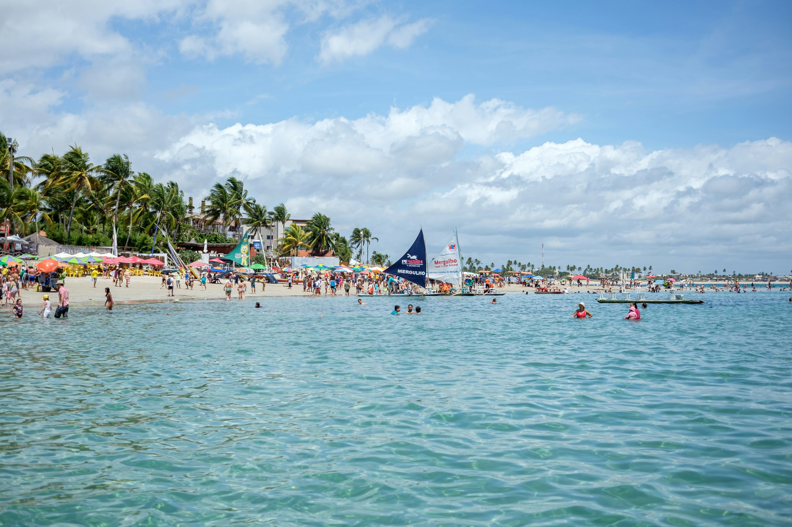

Praia

Porto de Galinhas - PE
Praias de águas calmas e piscinas naturais formadas entre os corais. Boa opção para quem viaja em família ou quer descansar.
Montanha

Campos do Jordão - SP
Cidade na serra da Mantiqueira, conhecida pelo clima frio e pela arquitetura no estilo europeu. Ótima para viagens em junho e julho.
Cidade

Lisboa - Portugal
Capital de Portugal, com bairros históricos, comida boa e fácil locomoção a pé ou de bonde. Indicada para quem quer juntar cultura e gastronomia.